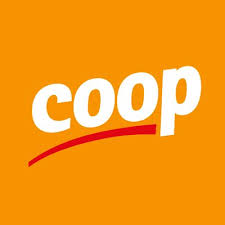
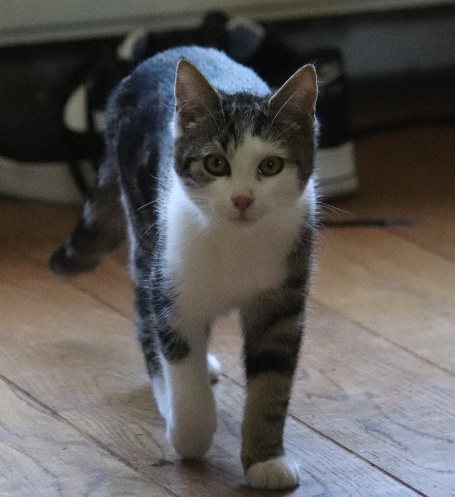
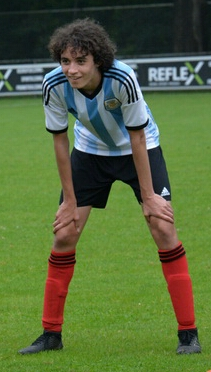
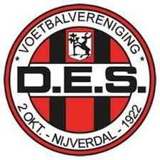

Hallo, mijn naam is Fabio Braker ik ben 16 jaar ik ben geboren in het jaar 2004 op 16 Oktober.
Ik woon in nijverdal met mijn vader en moeder en 3 jaar oudere broer en onze kat Evie, die laatst bij mijn vader in het huis kwam na dat onze eerste kat Tom stierf aan een nier ziekte een jaar geleden.helaas gingen mijn ouders scheiden rond de tijd (4 jaar oud) dat ik niet veel dingen kan herinneren, gelukkig ik heb nooit last gehad van de scheiding. Mijn twee ouders wonen dicht bij elkaar, dus gelukkig zie ik allebei mijn ouders om de week. Maar helaas wel in 2 verschillende huizen
Ik ben geslaagd bij de school Reggesteyn Willem de Clercq niveau theoretische leerweg van 2016-2020, wilt u meer weten over mijn school ervaringen klik hier!
Mijn hobby’s zijn gamen, voetballen, afspreken met mijn vrienden. Ik voetbal al 8 jaar bij de vereniging VV DES in Nijverdal, dichtbij allebei mijn huizen. Door voetbal heb ik veel mensen ontmoet en ervaringen meegemaakt. Daar ben ik dankbaar voor.
Ik ben volgens veel mensen een sociale jongen met veel energie en positieve gedachtes. Als ik een project hebt waar ik graag meer van wilt weten of leuk vind, zet ik mezelf erop om het op tijd en goed te maken voor het beste resultaat.
Ik heb van mezelf ook nadelen, ik overdenk snel dingen waardoor ik vast kom te zitten in wat er bijvoorbeeld, wel of niet in moet, te veel of te weinig. Maar dan zal ik snel om hulp vragen. Dit is een snelle samenvatting van wie ik ongeveer ben
Mijn werkervaringen zijn niet veel, ik heb in totaal bij twee bedrijven gewerkt/werk. Ik heb voor 2 weken gewerkt bij de voordeelmarkt in Nijverdal. ik heb daar pakketjes ingepakt van 8 tot 5. Na dat het rustiger werd omdat corona wat rustiger werd, heb ik nooit meer wat van ze gehoord (gelukkig maar).
Daarna moest ik weer opzoek naar een andere baan, ik heb allemaal winkels gekocht hier in Nijverdal en kon er maar geen vinden. Tot ik een appje kreeg als ik bij Coop Nijverdal zou willen werken. Ik heb ja gezegd en kwam op bezoek voor sollicitatie. Na ongeveer 2 weken van wachten kreeg ik antwoord en kon ik beginnen bij het werken bij de Coop.
wilt u mijn CV zien klik dan op de foto hieronder!
   